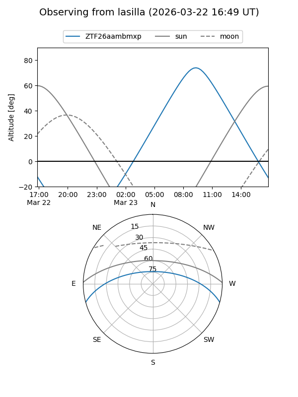
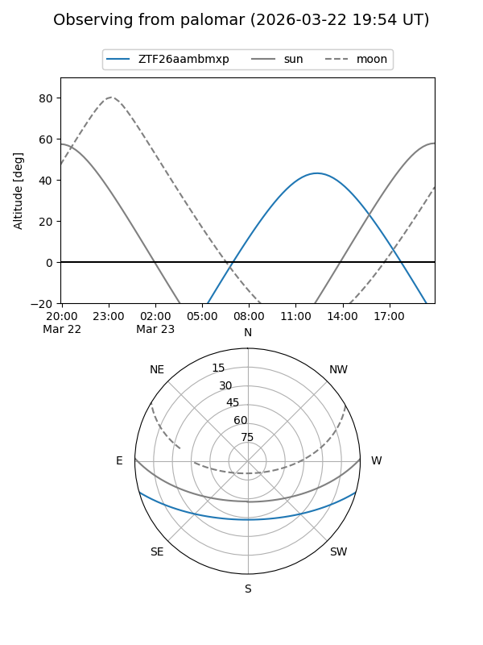

ZTF26aambmxp
Target ZTF26aambmxp at 2026-03-22 13:51
Aliases and brokers:
FINK: link
Lasair: link
ALeRCE: link
alt names
ZTF26aambmxp (ztf,fink_ztf)
Coordinates:
equatorial (ra, dec) = 249.2116,-13.26765
equatorial (HMS+DMS) = 16:36:50.79,-13:16:03.55
galactic (l, b) = (3.8757,+22.04409)
Flags:
Photometry:
last ztfg=17.70
1 ztfg detections
Lightcurve
Visibility


Additional plots